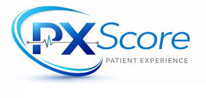

Trade Mark Journal No.2026/007 13 February 2026
UK00004331356 28 January 2026 (9,35,41,42,44)

- Class 9
- Computer software for healthcare analytics; downloadable mobile applications for healthcare analytics and patient experience scoring; downloadable computer software for capturing, scoring and analysing patient experience data; data processing software; downloadable software for health outcomes analysis; downloadable computer software employing machine learning and artificial intelligence for healthcare decision support; downloadable electronic publications, reports, benchmarks and scorecards in the field of healthcare quality and patient experience; application programming interfaces (APIs) for data integration in the field of healthcare and patient experience; downloadable dashboards and score analytics for hospital and clinical performance benchmarking.
- Class 35
- Business data analysis services; business intelligence services relating to healthcare facilities; compilation and analysis of business data relating to patient experience and healthcare quality; business performance benchmarking services; collection, compilation and analysis of data and statistics relating to patient satisfaction and experience; survey administration and data collection services for business purposes; business performance evaluation and analysis services relating to healthcare quality and patient experience; advisory and consultancy services in the field of healthcare quality improvement and patient experience; reporting and scorecard services for healthcare management purposes.
- Class 41
- Education and training services in the field of healthcare quality and patient experience; providing courses, seminars, workshops and online training relating to patient experience scoring systems; certification of healthcare organisations and professionals in the use of patient experience scoring methodologies; publication of reports, studies and whitepapers in the field of healthcare quality and patient experience; arranging and conducting conferences and professional events relating to healthcare analytics and patient experience.
- Class 42
- Software design and development; design, development and maintenance of computer software for healthcare analytics; providing temporary use of online non-downloadable software for healthcare data analysis, patient experience assessment and healthcare quality scoring; Software as a Service (SaaS); Platform as a Service (PaaS); hosting platforms on the Internet for analysing, scoring and benchmarking healthcare quality and patient experience; development of application programming interfaces (APIs) for data integration in the field of healthcare; cloud computing services; technical data analysis services; technological consultancy in the field of artificial intelligence and machine learning for healthcare.
- Class 44
- Providing medical information in the field of healthcare quality, patient satisfaction and patient experience; healthcare quality assessment and reporting services; providing information relating to healthcare quality benchmarks and patient experience scoring; advisory and consultancy services relating to healthcare quality metrics, patient experience and patient satisfaction; preparation of patient experience scorecards, benchmarking indices and quality reports for medical and healthcare institutions.
PATIENT EXPERIENCE (PX) LTD